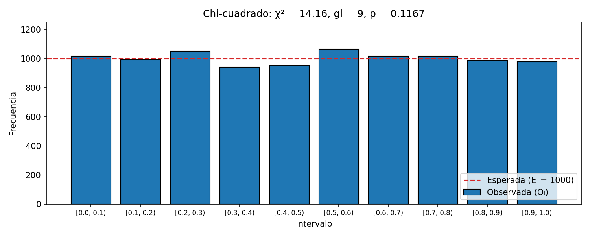
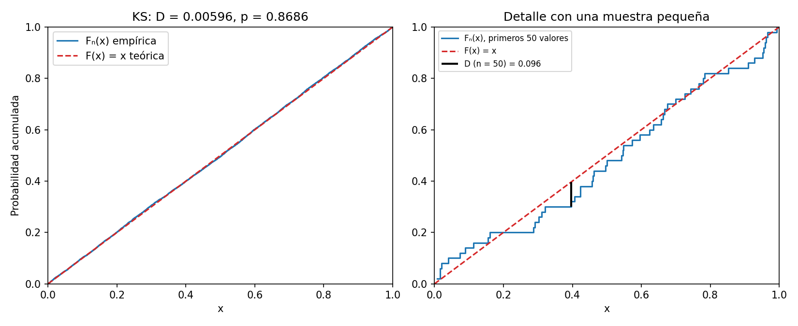
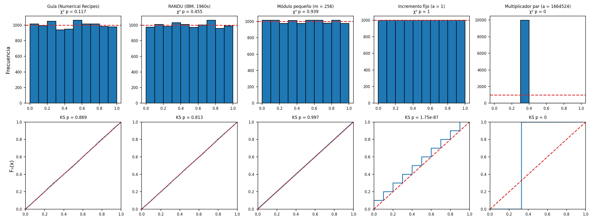
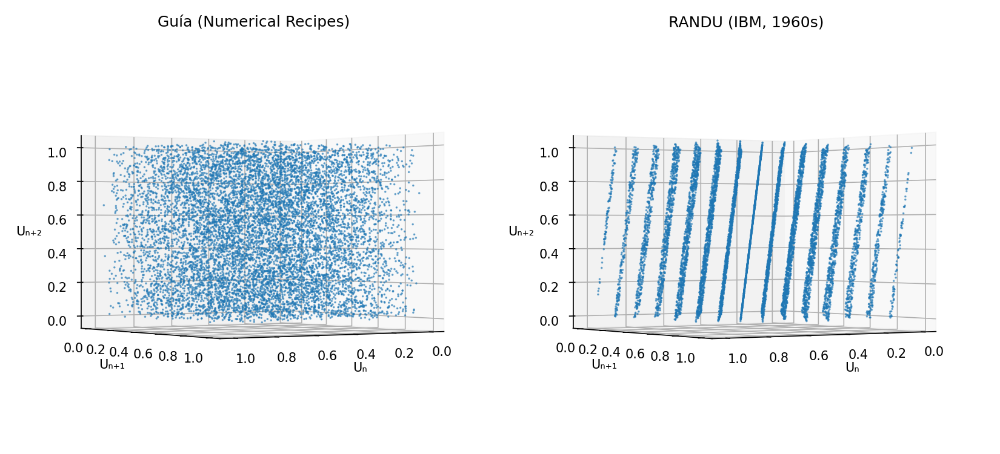
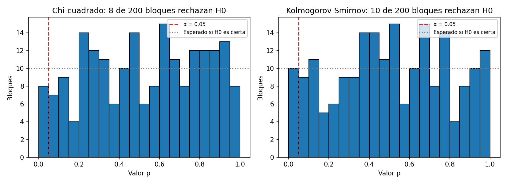
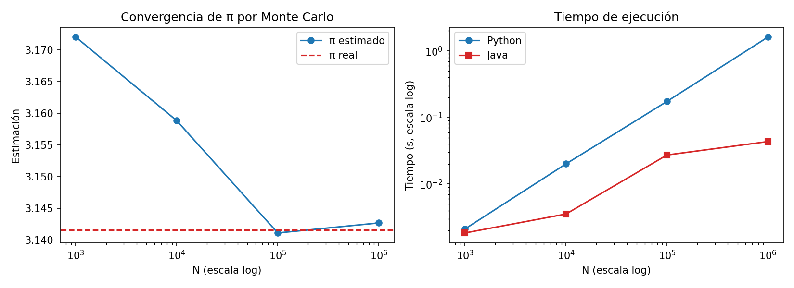

Reporte Técnico de Actividades
Práctico-Experimentales Nro. 006
1. Datos de Identificación del Estudiante y la Práctica
| Nombre del estudiante(s) | Ivett Anahi Zaragocin Mora |
| Asignatura | Simulación |
| Ciclo | 5 |
| Unidad | U2: Generación de números pseudoaleatorios y generación de variables aleatorias |
| Resultado de aprendizaje de la unidad | R2. Interpreta los resultados de una Simulación, bajo los principios de solidaridad, transparencia, responsabilidad y honestidad. |
| Práctica Nro. | 06 |
| Título de la Práctica | Validación estadística de números pseudoaleatorios mediante Chi-cuadrado y Kolmogorov-Smirnov |
| Nombre del Docente | José Oswaldo Guamán Quinche |
| Fecha | 05 y 06 de noviembre de 2026 |
| Horario | Jueves 10h30 a 11h30 · Viernes 07h30 a 09h30 |
| Lugar | Aula |
| Tiempo planificado en el Sílabo | 3 horas |
2. Objetivo(s) de la Práctica
Objetivo general: evaluar la calidad estadística de una secuencia de números pseudoaleatorios mediante pruebas de bondad de ajuste, utilizando los métodos Chi-cuadrado y Kolmogorov-Smirnov para determinar si los valores generados presentan un comportamiento compatible con una distribución uniforme en el intervalo [0, 1].
Objetivos específicos:
- Generar secuencias de números pseudoaleatorios utilizando el método congruencial lineal (LCG).
- Aplicar la prueba estadística Chi-cuadrado para evaluar la uniformidad de las frecuencias observadas.
- Aplicar la prueba Kolmogorov-Smirnov para comparar la distribución empírica con la distribución uniforme teórica.
- Interpretar los estadísticos de prueba y sus respectivos valores p.
- Comparar el comportamiento estadístico de diferentes configuraciones del generador pseudoaleatorio.
3. Materiales, Reactivos, Equipos y Herramientas
Materiales y reactivos:
- Computador.
- Python 3.12 con Matplotlib 3.9 para las gráficas [9].
- Java (OpenJDK 21).
- Generador LCG con los parámetros de la práctica 5: a = 1664525, c = 1013904223, m = 232, semilla = 12345.
Equipos y herramientas:
- Sistema operativo Linux, Visual Studio Code y Git/GitHub.
- Los valores p se programaron desde cero en ambos lenguajes, sin bibliotecas estadísticas. En lugar de Pandas se usó el módulo
csvde Python, suficiente para guardar las tablas. SciPy se usó solo para validar los valores p (sección 5).
4. Marco Conceptual
4.1 Números pseudoaleatorios y prueba de hipótesis
Los números pseudoaleatorios se generan con algoritmos deterministas que buscan reproducir las propiedades estadísticas de una secuencia aleatoria [1]. La propiedad básica es la uniformidad en [0, 1), que se evalúa con una prueba de hipótesis [2]:
H0: U ~ U(0, 1) H1: U ≁ U(0, 1) α = 0.05
El valor p es la probabilidad de obtener un estadístico igual o más extremo que el observado si H0 fuera cierta. Si p < α se rechaza H0; si p ≥ α no hay evidencia suficiente para rechazarla [3].
4.2 Generador congruencial lineal
Xn+1 = (a · Xn + c) mod m, Un = Xn / m
donde Xn es el valor actual (al inicio, la semilla), a el multiplicador, c el incremento y m el módulo [4].
4.3 Prueba Chi-cuadrado
Se divide [0, 1) en k = 10 intervalos iguales y se compara la frecuencia observada Oi con la esperada Ei = n / k [2]:
χ² = Σi=1..k (Oi − Ei)² / Ei, gl = k − 1 = 9
El valor p es P(χ²9 > χ²obs) y se calcula con la función gamma incompleta regularizada Q(gl/2, χ²/2) [5]. El valor crítico para α = 0.05 y 9 gl es 16.919.
4.4 Prueba Kolmogorov-Smirnov
Compara la función de distribución acumulada empírica Fn(x) con la teórica F(x) = x de la uniforme [6]. Con los datos ordenados u(1) ≤ … ≤ u(n):
D+ = max (i/n − u(i)), D− = max (u(i) − (i−1)/n), D = sup |Fn(x) − F(x)| = max(D+, D−)
El valor p se obtiene de la distribución de Kolmogorov, Q(λ) = 2 Σj≥1 (−1)j−1 e−2j²λ², con la corrección de Stephens λ = (√n + 0.12 + 0.11/√n) · D [5], [7]. A diferencia de Chi-cuadrado, KS no agrupa los datos en intervalos: usa cada valor.
5. Procedimiento / Metodología Ejecutada
- Actividad 1, generación con LCG. Se programó el generador en Python (
model.py) y en Java (java/Lcg.java) siguiendo los pasos de la guía. Se generaron 10 000 números con la semilla 12345 y se guardaron enlcg_python.csvylcg_java.csv. En Java, el producto a·X puede desbordar unlong, pero como m es potencia de 2 y divide a 264, la máscara& (m − 1)da el resultado exacto. - Algoritmo 2, Chi-cuadrado. Se implementó siguiendo los 14 pasos de la guía (
chi_square_testen Python yPruebasEstadisticas.chiCuadradoen Java). - Algoritmo 3, Kolmogorov-Smirnov. Se ordenaron los datos, se calcularon D+, D− y D, el valor p y la decisión, y se graficaron Fn(x) y F(x).
- Valores p sin bibliotecas. Java no tiene función gamma, así que se implementó con la aproximación de Lanczos. Los valores p se validaron contra SciPy [8]: Chi-cuadrado coincide en todas las cifras; KS difiere en la tercera cifra decimal, porque SciPy usa la distribución exacta y aquí se usó la asintótica.
- Configuraciones del generador. Se aplicaron ambas pruebas a cinco configuraciones: la de la guía, RANDU [10], un módulo pequeño (m = 256), un incremento fijo (a = 1) y un multiplicador par.
- Experimentos adicionales. Efecto del tamaño de la muestra (n = 100 a 100 000) y aplicación de las pruebas a 200 bloques consecutivos de 1000 números.
- Tabla de resultados esperados. La guía pide estimar π con N = 1 000 a 1 000 000 y medir el tiempo en Python y Java. Se estimó π por Monte Carlo usando pares (U2i−1, U2i) del LCG: π ≈ 4 · (puntos con x² + y² ≤ 1) / N.
- Verificación. Se escribieron 18 pruebas unitarias con
unittest, entre ellas cálculos a mano, valores críticos tabulados y la comparación Python/Java.
6. Resultados
6.1 Secuencia generada en Python y Java
| n | Un Python | Un Java | ¿Igual? |
|---|---|---|---|
| 1 | 0.0204026857 | 0.0204026857 | Sí |
| 2 | 0.0165478482 | 0.0165478482 | Sí |
| 3 | 0.5431557945 | 0.5431557945 | Sí |
| 4 | 0.6349040561 | 0.6349040561 | Sí |
| 5 | 0.9100295138 | 0.9100295138 | Sí |
| 6 | 0.1124616691 | 0.1124616691 | Sí |
| 7 | 0.4958894053 | 0.4958894053 | Sí |
| 8 | 0.5483488443 | 0.5483488443 | Sí |
| 9 | 0.5961001171 | 0.5961001171 | Sí |
| 10 | 0.7834504161 | 0.7834504161 | Sí |
| 11 | 0.0398543174 | 0.0398543174 | Sí |
| 12 | 0.7438012224 | 0.7438012224 | Sí |
| 13 | 0.9658093676 | 0.9658093676 | Sí |
| 14 | 0.0736675409 | 0.0736675409 | Sí |
| 15 | 0.6996069294 | 0.6996069294 | Sí |
| 16 | 0.4602941743 | 0.4602941743 | Sí |
| 17 | 0.3964835154 | 0.3964835154 | Sí |
| 18 | 0.9595212869 | 0.9595212869 | Sí |
| 19 | 0.4061253010 | 0.4061253010 | Sí |
| 20 | 0.9527641565 | 0.9527641565 | Sí |
Las dos implementaciones produjeron la misma secuencia: coincidieron los 10 000 de 10 000 valores.
6.2 Prueba Chi-cuadrado
| Intervalo | Oi | Ei | Oi − Ei | (Oi − Ei)² / Ei |
|---|---|---|---|---|
| [0.0, 0.1) | 1016 | 1000 | +16 | 0.2560 |
| [0.1, 0.2) | 993 | 1000 | -7 | 0.0490 |
| [0.2, 0.3) | 1049 | 1000 | +49 | 2.4010 |
| [0.3, 0.4) | 940 | 1000 | -60 | 3.6000 |
| [0.4, 0.5) | 949 | 1000 | -51 | 2.6010 |
| [0.5, 0.6) | 1063 | 1000 | +63 | 3.9690 |
| [0.6, 0.7) | 1014 | 1000 | +14 | 0.1960 |
| [0.7, 0.8) | 1016 | 1000 | +16 | 0.2560 |
| [0.8, 0.9) | 984 | 1000 | -16 | 0.2560 |
| [0.9, 1.0) | 976 | 1000 | -24 | 0.5760 |
| χ² = Σ (Oᵢ − Eᵢ)² / Eᵢ | 14.1600 | |||

| Lenguaje | χ² | gl | Valor p | Decisión (α = 0.05) |
|---|---|---|---|---|
| Python | 14.1600 | 9 | 0.1167 | No se rechaza H0 |
| Java | 14.1600 | 9 | 0.1167 | No se rechaza H0 |
Como χ² = 14.16 < 16.919 (p = 0.117 ≥ 0.05), no se rechaza H0: las frecuencias son compatibles con una distribución uniforme. Los intervalos que más aportan al estadístico son [0.5, 0.6) con 63 valores de más y [0.3, 0.4) con 60 de menos, desviaciones normales para una muestra aleatoria de este tamaño.
6.3 Prueba Kolmogorov-Smirnov

| Lenguaje | D+ | D− | D | Valor p | Decisión (α = 0.05) |
|---|---|---|---|---|---|
| Python | 0.005960 | 0.005411 | 0.005960 | 0.8686 | No se rechaza H0 |
| Java | 0.005960 | 0.005411 | 0.005960 | 0.8686 | No se rechaza H0 |
La mayor distancia entre las dos curvas es D = 0.00596, menor que el valor crítico 1.358/√10 000 ≈ 0.0136. Con p = 0.869 no se rechaza H0: la distribución empírica es prácticamente igual a la uniforme. Las dos curvas de la Figura 2 (izquierda) casi no se distinguen.
6.4 Comparación de configuraciones del generador
| Configuración | a | c | m | Distintos | χ² | p χ² | D | p KS | Rechaza H0 en |
|---|---|---|---|---|---|---|---|---|---|
| Guía (Numerical Recipes) | 1664525 | 1013904223 | 232 | 10 000 | 14.160 | 0.117 | 0.00596 | 0.869 | Ninguna |
| RANDU (IBM, años 60) | 65539 | 0 | 231 | 10 000 | 8.812 | 0.455 | 0.00636 | 0.813 | Ninguna |
| Módulo pequeño | 137 | 187 | 256 | 256 | 3.536 | 0.939 | 0.00403 | 0.997 | Ninguna |
| Incremento fijo | 1 | 429496731 | 232 | 10 000 | 0.000 | 1.000 | 0.09999 | 1.7·10−87 | Solo KS |
| Multiplicador par | 1664524 | 1013904223 | 232 | 16 | 89 720.2 | ≈ 0 | 0.66999 | ≈ 0 | Ambas |

En las cinco configuraciones, Java obtuvo los mismos estadísticos que Python. Los resultados muestran tres situaciones distintas:
- Multiplicador par: al incumplir Hull-Dobell, la secuencia cae en un ciclo de solo 16 valores, todos en [0.3, 0.4). Ambas pruebas lo rechazan con p ≈ 0.
- Incremento fijo (a = 1): cada valor es el anterior más ≈ 0.1, así que la secuencia es 0.1, 0.2, …, 0.9, 0.0, 0.1, … con un desplazamiento mínimo en cada vuelta. Cada intervalo recibe exactamente 1000 valores, χ² = 0 y Chi-cuadrado no detecta nada. KS, en cambio, ve que los datos se amontonan en 10 puntos (Fn es una escalera) y la rechaza.
- RANDU y módulo pequeño: pasan ambas pruebas, pero no son buenos generadores. El de m = 256 solo tiene 256 valores distintos que se repiten 39 veces, y su p tan cercano a 1 (0.997) indica una uniformidad demasiado perfecta para ser azar. RANDU tiene un defecto que estas pruebas no pueden ver (Figura 4).

En RANDU se cumple Un+2 = 6Un+1 − 9Un (mod 1), porque a² = (216 + 3)² ≡ 6a − 9 (mod 231). Por eso todas las ternas caen en solo 15 planos paralelos [10], [11]. Chi-cuadrado y KS evalúan los valores uno por uno (en una dimensión), así que no detectan esta dependencia entre valores consecutivos.
6.5 Efecto del tamaño de la muestra
| n | χ² | p χ² | D | p KS | Decisión |
|---|---|---|---|---|---|
| 100 | 6.600 | 0.6787 | 0.10179 | 0.2381 | No se rechaza H0 |
| 1 000 | 4.120 | 0.9033 | 0.02864 | 0.3800 | No se rechaza H0 |
| 10 000 | 14.160 | 0.1167 | 0.00596 | 0.8686 | No se rechaza H0 |
| 100 000 | 9.160 | 0.4226 | 0.00207 | 0.7829 | No se rechaza H0 |
El generador de la guía pasa ambas pruebas con todos los tamaños. D disminuye aproximadamente como 1/√n (0.102 → 0.029 → 0.006 → 0.002): con más datos, Fn se acerca más a F. Las pruebas se vuelven más exigentes con n grande, porque detectan desviaciones cada vez más pequeñas.
6.6 Pruebas repetidas: el significado de α

Chi-cuadrado rechazó H0 en 8 de 200 bloques (4 %) y KS en 10 de 200 (5 %). Esto es lo esperado: si H0 es cierta, el valor p se distribuye uniformemente en [0, 1], así que con α = 0.05 se rechaza en ≈ 5 % de los casos solo por azar (error tipo I). Un rechazo aislado no indica que el generador sea malo. Lo que indicaría un problema es que se rechace con mucha más frecuencia que α.
6.7 Tabla de resultados esperados: estimación de π
| N | π estimado (Python = Java) | Error |π̂ − π| | Tiempo Python (s) | Tiempo Java (s) |
|---|---|---|---|---|
| 1 000 | 3.172000 | 0.030407 | 0.002117 | 0.001844 |
| 10 000 | 3.158800 | 0.017207 | 0.020080 | 0.003547 |
| 100 000 | 3.141080 | 0.000513 | 0.174623 | 0.027337 |
| 1 000 000 | 3.142656 | 0.001063 | 1.618530 | 0.043505 |

Python y Java obtienen exactamente la misma estimación para cada N, porque usan la misma secuencia. El error disminuye en general al aumentar N, aproximadamente como 1.64/√N (la desviación estándar de un estimador de Monte Carlo [12]). No baja en cada paso porque la estimación también es aleatoria: con N = 100 000 el error fue 0.0005 y con 1 000 000, 0.0011, ambos dentro de lo esperado (0.005 y 0.0016). En tiempo, Java fue unas 37 veces más rápido con N = 1 000 000 (0.044 s frente a 1.62 s), porque compila a código nativo durante la ejecución (JIT), mientras que Python interpreta cada operación. Los tiempos varían un poco entre ejecuciones.
7. Preguntas de Control
¿Qué es la hipótesis nula?
Es la afirmación que se pone a prueba y se mantiene mientras los datos no aporten evidencia suficiente en su contra [3]. En esta práctica, H0: los números generados siguen una distribución U(0, 1).
¿Qué representa el valor p?
La probabilidad de obtener un estadístico igual o más extremo que el observado suponiendo que H0 es cierta. Un p pequeño indica que el resultado sería muy raro bajo H0. No es la probabilidad de que H0 sea cierta [3]. Por ejemplo, χ² = 14.16 tiene p = 0.117: una muestra realmente uniforme daría un χ² así de grande o mayor el 11.7 % de las veces.
¿Qué significa rechazar H₀?
Que, con un nivel de significancia α = 0.05, los datos son incompatibles con una distribución uniforme (p < 0.05). Existe un 5 % de probabilidad de rechazar por error una H0 cierta (error tipo I), como se vio en la sección 6.6. Además, no rechazar H0 no demuestra que sea cierta; solo indica que no hay evidencia en su contra.
¿Qué diferencia existe entre Chi-cuadrado y KS?
Chi-cuadrado agrupa los datos en k intervalos y compara frecuencias. Sirve también para distribuciones discretas, pero pierde información dentro de cada intervalo y su resultado depende de k. KS compara la distribución acumulada completa, usa cada valor sin agrupar y es más sensible con muestras pequeñas, pero en su forma clásica es para distribuciones continuas completamente especificadas [2], [6]. La configuración con a = 1 muestra la diferencia: tiene frecuencias perfectas (χ² = 0), pero KS la rechaza porque los valores se amontonan dentro de cada intervalo.
¿Por qué una prueba estadística no demuestra que un generador sea verdaderamente aleatorio?
Por cuatro razones. Primero, una prueba solo puede rechazar H0, nunca demostrarla: no rechazar significa "no se encontró evidencia en contra". Segundo, cada prueba revisa una sola propiedad: Chi-cuadrado y KS revisan la uniformidad en una dimensión, pero no la independencia entre valores. RANDU pasa ambas y sin embargo sus ternas caen en 15 planos. Tercero, los generadores son deterministas: con la semilla se predice toda la secuencia, y el de m = 256 pasa ambas pruebas con solo 256 valores que se repiten. Cuarto, se analiza una muestra finita. Por eso se aplican baterías de muchas pruebas, como TestU01 [13]: un generador nunca se demuestra aleatorio, solo acumula evidencia de que se comporta como tal.
8. Conclusiones
- El LCG de la guía (a = 1664525, c = 1013904223, m = 232) pasa ambas pruebas: χ² = 14.16 (p = 0.117) y D = 0.00596 (p = 0.869). No se rechaza que sus valores sigan una distribución U(0, 1).
- Las implementaciones en Python y Java son funcionales y equivalentes: producen la misma secuencia de 10 000 valores, los mismos estadísticos y valores p en las cinco configuraciones, y la misma estimación de π.
- Las dos pruebas se complementan. Chi-cuadrado no detectó la configuración con a = 1 (χ² = 0) y KS sí. Un generador defectuoso, como el de multiplicador par, es rechazado por ambas.
- Pasar las pruebas de uniformidad es necesario, pero no suficiente: RANDU y el módulo pequeño las pasan y aun así son malos generadores. Siempre se debe revisar también la independencia y el período.
- Con α = 0.05, alrededor del 5 % de las muestras de un buen generador son rechazadas por azar (4 % y 5 % en 200 bloques). Por eso la calidad se juzga con muchas repeticiones, no con un solo valor p.
- Para simulaciones grandes, Java fue unas 37 veces más rápido que Python puro con el mismo algoritmo.
9. Recomendaciones
- Aplicar siempre más de una prueba y complementar las de uniformidad con pruebas de independencia (rachas, autocorrelación, series en 2D y 3D).
- Desconfiar también de valores p muy cercanos a 1: una uniformidad "demasiado perfecta" puede indicar un patrón.
- Repetir las pruebas con varias muestras o semillas y revisar que la proporción de rechazos sea cercana a α.
- Para trabajo serio, usar generadores modernos (PCG64, Mersenne Twister) validados con baterías como TestU01 [13].
- En Python, usar NumPy (operaciones vectorizadas) cuando se necesiten millones de números, o un lenguaje compilado como Java.
10. Bibliografía / Referencias
[1] D. E. Knuth, The Art of Computer Programming, Vol. 2: Seminumerical Algorithms, 3rd ed. Reading, MA, USA: Addison-Wesley, 1997.
[2] J. Banks, J. S. Carson, B. L. Nelson y D. M. Nicol, Discrete-Event System Simulation, 5th ed. Upper Saddle River, NJ, USA: Pearson, 2010.
[3] D. C. Montgomery y G. C. Runger, Applied Statistics and Probability for Engineers, 7th ed. Hoboken, NJ, USA: Wiley, 2018.
[4] A. M. Law, Simulation Modeling and Analysis, 5th ed. New York, NY, USA: McGraw-Hill, 2015.
[5] W. H. Press, S. A. Teukolsky, W. T. Vetterling y B. P. Flannery, Numerical Recipes: The Art of Scientific Computing, 3rd ed. Cambridge, U.K.: Cambridge University Press, 2007.
[6] F. J. Massey, “The Kolmogorov-Smirnov test for goodness of fit,” Journal of the American Statistical Association, vol. 46, no. 253, pp. 68–78, 1951.
[7] M. A. Stephens, “Use of the Kolmogorov-Smirnov, Cramér-von Mises and related statistics without extensive tables,” Journal of the Royal Statistical Society, Series B, vol. 32, no. 1, pp. 115–122, 1970.
[8] P. Virtanen et al., “SciPy 1.0: Fundamental algorithms for scientific computing in Python,” Nature Methods, vol. 17, pp. 261–272, 2020.
[9] J. D. Hunter, “Matplotlib: A 2D graphics environment,” Computing in Science & Engineering, vol. 9, no. 3, pp. 90–95, 2007.
[10] G. Marsaglia, “Random numbers fall mainly in the planes,” Proceedings of the National Academy of Sciences, vol. 61, no. 1, pp. 25–28, 1968.
[11] P. L’Ecuyer, “Tables of linear congruential generators of different sizes and good lattice structure,” Mathematics of Computation, vol. 68, no. 225, pp. 249–260, 1999.
[12] N. Metropolis y S. Ulam, “The Monte Carlo method,” Journal of the American Statistical Association, vol. 44, no. 247, pp. 335–341, 1949.
[13] P. L’Ecuyer y R. Simard, “TestU01: A C library for empirical testing of random number generators,” ACM Transactions on Mathematical Software, vol. 33, no. 4, art. 22, 2007.
[14] J. O. Guamán Quinche, “Diapositivas semana 6 – Pruebas de números pseudoaleatorios,” Universidad Nacional de Loja, 2026.
11. Anexos
Anexo A. Código fuente
El código completo está en el repositorio github.com/ivecanahi/simulacion-practicas, carpeta Unidad2/practica06. Se ejecuta con:
pip install -r requirements.txt cd Unidad2/practica06 python3 main.py # Python + Java: pruebas, configuraciones, π y gráficas python3 -m unittest -v # pruebas
Pruebas en Python (model.py):
def chi_square_test(values, k=10, alpha=0.05):
n = len(values)
observed = [0] * k
for u in values:
observed[min(int(u * k), k - 1)] += 1
expected = n / k
statistic = sum((o - expected) ** 2 / expected for o in observed)
p_value = chi2_sf(statistic, k - 1)
return {"estadistico": statistic, "gl": k - 1, "p": p_value, "rechaza": p_value < alpha}
def ks_test(values, alpha=0.05):
ordered = sorted(values)
n = len(ordered)
d_plus = max((i + 1) / n - u for i, u in enumerate(ordered))
d_minus = max(u - i / n for i, u in enumerate(ordered))
d = max(d_plus, d_minus)
p_value = ks_sf((math.sqrt(n) + 0.12 + 0.11 / math.sqrt(n)) * d)
return {"estadistico": d, "p": p_value, "rechaza": p_value < alpha}
Kolmogorov-Smirnov en Java (java/PruebasEstadisticas.java):
double[] ordered = values.clone();
Arrays.sort(ordered);
for (int i = 0; i < n; i++) {
dPlus = Math.max(dPlus, (i + 1.0) / n - ordered[i]);
dMinus = Math.max(dMinus, ordered[i] - (double) i / n);
}
double d = Math.max(dPlus, dMinus);
double p = ksSf((Math.sqrt(n) + 0.12 + 0.11 / Math.sqrt(n)) * d);
Anexo B. Resultado de las pruebas unitarias
$ python3 -m unittest .................. ---------------------------------------------------------------------- Ran 18 tests OK (skipped=1) # la validación con SciPy se omite si SciPy no está instalado